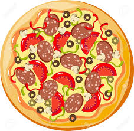

Pizza

Goal:
Make a pizza with whatever toppings you can imagine!
Steps:
- Find the Pizza recipe program ( pizza.pde ) and open it using Processing.
- Set your canvas size in the setup method.
size(width, height);
- Draw a biscuit colored ellipse for the pizza base, a red ellipse for sauce and a yellow ellipse inside (for the cheese).
Do this in the setup method. You can use R,G,B values or the Processing Color Selector Tool to help you find the right colors.
fill(color); ellipse(x, y, width, height);
- Get some topping images for your pizza. Some examples are provided for you, but if you want to choose your own toppings you can.
- Make a PImage variable for each type of topping at the top of the sketch:
PImage pepperoni;
- Drag and drop the topping image file onto your sketch.
- Load the topping image (in the setup method):
pepperoni = loadImage("pepperoni.png"); - In the draw method, use the image command to draw the topping somewhere on your pizza:
image(pepperoni,200,200);
- If your topping is too big for the pizza, resize the topping image. Do this in the setup method.
pepperoni.resize(30, 30);
- Repeat the above steps for more toppings.
- Make a PImage variable for each type of topping at the top of the sketch:
- Add more code so that the toppings are only drawn when the user clicks the mouse (in draw method).
- Make sure you SAVE YOUR CODE when you are done.
- OPTIONAL Add a different topping with the right mouse click.
if (mousePressed && (mouseButton == RIGHT)) {} - OPTIONAL Use a background image to put the pizza in a box.
PImage pizzaBox = loadImage("box.jpg"); //in setup method pizzaBox.resize(width, height); //to match your canvas size background(pizzaBox); //in setup method - OPTIONAL: To play a sound when you add a topping....
First download a sound from freesound.org and drop it onto your sketch
Import the minim library Pocessing > tools > add tools > libraries (search minim)
import ddf.minim.*; //at the top of the sketch Minim minim; //at the top of the sketch AudioPlayer sound; //at the top of the sketch minim = new Minim(this); //in the setup method sound = minim.loadFile("ding.wav"); //in the setup method // Put next 2 lines where you want the sound to play sound.play(); sound.rewind();